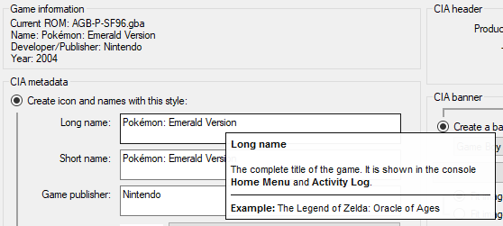
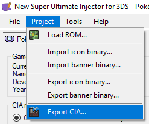
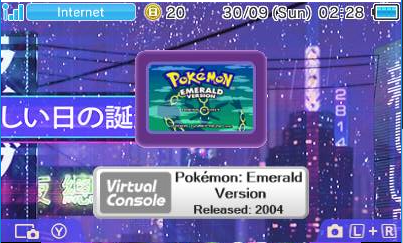

New Super Ultimate Injector usage guide
The New Super Ultimate Injector can be used to create installable games from certain older consoles on a 3DS Family system.
The 3DS natively contains hardware to run such games, which is why VC Injects (which is what these are) are more desirable than emulators, as they automatically get better performance and compatibility.
For this example, I will be making a VC inject of Pokemon Emerald for the Game Boy Advance. Broadly speaking, the steps will not differ too much for other supported VC injectable consoles.
To begin, open New Super Ultimate Injector for 3DS.exe, and create a new project.

Once the project loads, import your legally dumped GBA rom by navigating to it in the window that appears when you click this button.

Most of the information about your rom will be automatically prefilled. You may customise it as you wish. The options are reasonably self-explanatory, however if you are unsure, hover your mouse over a box or button for a short explanation of what it does.

Most of the customisation is up to you. You can pick a long and short name, change the game icon, choose a title ID, modify the CIA banner, etc, etc. If you are lazy, most of these options can be left unchanged, but you should click "Download title screen from database" under icon settings and banner settings in order to get a half decent icon and banner image that you don't have to go hunting for.
Importantly, at this time, there is no way to change button mapping for a VC inject.
Under "Edit content options" at the bottom, you can apply a hard reset and or a sleep patch, if you want to do that.
Once you have finished customising your rom, export it.

It can then be installed to your console via FBI, which by this point you should already have.
Here is an example of what the database title screen import looks like on a console. It's pretty good, for something that takes no effort on the user's behalf.
